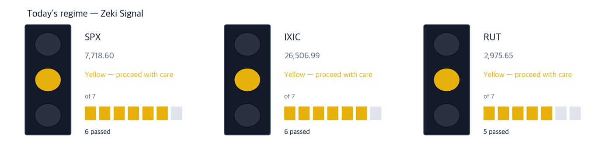
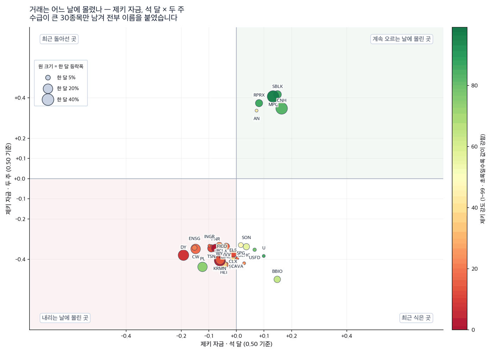
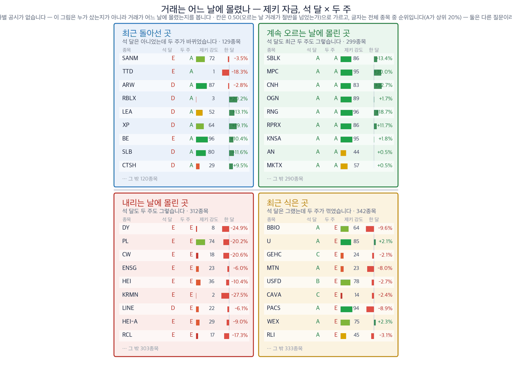

The names below are not our holdings. They are candidates drawn from the news.
Hormuz closed, and refiners moved first
ZekiRex™ Paper Digest · US edition · September 8, 2026
All closes are as of Friday, September 4 — September 7 was Labor Day
First, this week's economy
The one thread running through today
The heaviest thing this week is the Strait of Hormuz. Tariffs and bank capital move the profit of particular industries; crude reaches the discount rate of every asset through prices.
Edaily reported four million barrels a day of disrupted supply. Reuters, the same day, asked a different question — why is the price still not above $100? Asian outlets read this as a cost shock; Anglo-American outlets looked first at the spare capacity still available. The same event, diagnosed two ways.
Monday, September 7 was Labor Day: the Dow, the S&P 500 and the Nasdaq were all shut. This morning is the first open in three sessions, so the numbers below have never once traded against this news. That is the most important fact in today’s edition.
Last close Sep 4 | Supply cut 4m bbl/day | Seoul 6,954.52 −0.58% | Won 1,345.6 |

How to read this
| Lit lamp | Today's regime. Green means buyers have the edge, yellow means wait, red means no new buys. |
| Filled squares | How many of the 7 conditions passed. More filled means firmer market structure. |
| All filled but not green | Something else pulled the grade down one step. The reason is printed under the lamp. |
All three indexes are yellow. The S&P 500 and the Nasdaq passed six of seven conditions, the Russell 2000 five. Buy, but do not size up — and after three days shut, the first hour of trade may be rough.
Executive summary — what to do now
The conclusion first
The clearest thing today
It is not the companies that sell crude but the ones that refine it that are ahead.
Three refiners among the names we follow met all four conditions — Valero (VLO), Phillips 66 (PSX) and HF Sinclair (DINO). Their one-month returns are +22.4%, +24.1% and +27.1%, and Valero closed at a 52-week high.
What matters is that this strength was in place before Hormuz. Our measurement is on the September 4 close, which precedes the escalation. This is not a position entered on the news; the news arrived at a position already held.
The producers did not follow. Exxon Mobil is +3.0% on the month and Occidental +7.1%, and both carry a Zeki Money grade of D. It feels as though a crude rally should lift every oil name. It did not.
Well grounded 3 Grounded 2 Needs checking 2
Why — the names we found in the news
These are not our holdings — two themes
Zeki Strength is a 1–99 rank: where a stock’s price sits among the 8,031 US names we follow. 90 means the top ten per cent.
Zeki Money grades A–E whether volume ran heavier on up days than on down days. A is the top fifth. The US discloses no daily buyer breakdown, so this tracks trading, not people. We print the three-month reading and the last two weeks side by side.
Theme 1 — not the drillers but the refiners
A refiner earns not on the price of crude but on the gap between crude and the products made from it. A higher crude price raises the input cost, but when supply is blocked the product becomes scarcer still, and the gap widens.
The numbers say exactly that. Among producers, Exxon Mobil is +3.0% on the month, Occidental +7.1%, Suncor +9.7% — tepid. Among refiners, Valero +22.4%, Phillips 66 +24.1%, HF Sinclair +27.1%. Same crude, and the prices split that far apart.
We already hold one name in this theme (Marathon Petroleum). The three below are not held.
Theme 1 · Refining — large
Valero Energy (VLO)
Source: International wire copy, Sep 8 · prices our own measurement (Sep 4 close)
| Close | 1 month | 3 months | Zeki Strength | Off high |
|---|
| $370.72 | +22.4% | +44.9% | 95 | 0.0% |
| Who | The largest independent refiner in the United States. Buying crude and selling gasoline and diesel is the whole business. |
| What | If a Hormuz disruption makes products scarce, the refining margin widens. The September 4 close was a 52-week high. |
| When | The strength predates Hormuz: +44.9% over three months, already rising when the news arrived. |
| Where | Refineries on the US Gulf Coast and in the Midwest. |
| Why | Blocked crude raises the input cost, but the product price rises faster. The refiner keeps the difference. |
| How | All four conditions met. Price is up (+22.4% on the month), Zeki Strength 95 puts it in the top five per cent, and Zeki Money reads B over three months and A over the last two weeks. |
Verdict — All four — Well grounded. But it is 0.0% off its high. This is an entry at a new high, and if a pullback comes it becomes a place to wait rather than a place to buy. Well grounded and well priced are not the same sentence.
Invalidated if — Zeki Money over two weeks falling below C, or two consecutive closes under $370.72, which would mean the breakout failed.
Confirmed if — Holding above $370.72 on today’s open would mean the price has taken in three days of Hormuz news. Zeki Strength staying at 95 or better is the second gate.
Theme 1 · Refining — large
Phillips 66 (PSX)
Source: International wire copy, Sep 8 · prices our own measurement (Sep 4 close)
| Close | 1 month | 3 months | Zeki Strength | Off high |
|---|
| $255.09 | +24.1% | +39.3% | 92 | −0.4% |
| Who | An integrated energy company: refining plus pipelines and chemicals. |
| What | The same reason and the same direction as Valero, but the business is wider, so it is not levered to the refining margin alone. |
| When | +39.3% over three months, +24.1% over one — almost the same path. |
| Where | Refineries in the US and Europe, and a US pipeline network. |
| Why | Owning the pipelines means collecting a toll wherever the crude goes. A narrower refining margin does not empty the business. |
| How | All four met. Zeki Strength 92, and Zeki Money reads A on both windows — heavier up-day volume over three months and over the last two weeks alike. |
Verdict — All four — Well grounded. What separates it from Valero is the mix. Valero is the purer bet on the refining margin; the pipelines cushion Phillips 66. If crude retraces, Phillips 66 should give back less.
Invalidated if — Zeki Money over three months falling below C. A wobble in the two-week reading can be noise; a break in the three-month reading is the trend itself.
Confirmed if — Holding above $255.09 with the two-week Zeki Money at A or B keeps the case intact.
Theme 1 · Refining — mid cap
HF Sinclair (DINO)
Source: International wire copy, Sep 8 · prices our own measurement (Sep 4 close)
| 1 month | Zeki Strength | Zeki Money 3m | Zeki Money 2w | Daily turnover |
|---|
| +27.1% | 95 | A | A | $231m |
| Who | A refiner in the US Midwest and Rocky Mountain region — smaller than the two above, doing the same work. |
| What | A widening refining margin swings the profit of a smaller company further. Up +27.1% on the month, the largest of the three. |
| When | Again, before Hormuz. Measured on the September 4 close. |
| Where | Inland refineries, a step removed from the sea lanes. |
| Why | Inland plants buy crude cheaply and sell products at regional prices. Higher freight can work in their favour. |
| How | All four met. Zeki Strength 95, Zeki Money A on both windows. |
Verdict — All four — Well grounded. It rose the most and it is the smallest. Daily turnover of $231m is thinner than the other two, so it moves further on the same news and gives back more. Within one theme, size the smaller name smaller.
Invalidated if — Zeki Money over two weeks falling below C. In a smaller company the trading cools first.
Confirmed if — Zeki Strength holding at 95 or better with the two-week reading at A or B keeps the case intact.
Theme 2 — same crude, so why did the drillers not move?
A crude rally feels as though it should lift every oil company. The numbers split.
Exxon Mobil carries a Zeki Money grade of D over three months and E over two weeks. Occidental reads D and C, Suncor E and E. Prices are tepid and the volume sits on down days.
The reason is in the question Reuters asked — four million barrels a day disrupted, and the price still short of three figures. If the market believes spare capacity remains, no premium attaches to the expectation that crude stays high, and that expectation is what a driller is paid for. Refining is paid for the product being scarce right now.
We made no name out of this theme. Neither price nor money met the conditions.
One more left out — oilfield services. Oceaneering (OII) is strong at Zeki Strength 93, but the month gave only +4.4%, and Zeki Money reads A over three months against C over the last two weeks. Long accumulated, recently cooled. Three of four conditions is grounded, but the price did not follow, so it does not run today.
Today's findings on one page
The conclusion of two themes
The weight of evidence is counted, not judged. ① Is the one-month price up? ② Is Zeki Strength 90 or better? ③ Is Zeki Money over three months A or B? ④ Is Zeki Money over two weeks A or B?
Four gives Well grounded, three Grounded, two or fewer Needs checking. The label falls out of the count.
| Name | ① price
up | ② RS
90+ | ③ money
3m | ④ money
2w | met | Weight of evidence |
|---|
| Valero Energy (VLO) | O | O | O | O | 4/4 | Well grounded |
| Phillips 66 (PSX) | O | O | O | O | 4/4 | Well grounded |
| HF Sinclair (DINO) | O | O | O | O | 4/4 | Well grounded |
| Oceaneering (OII) | O | O | O | X | 3/4 | Grounded |
| Clearwater Paper (CCC) | O | X | O | O | 3/4 | Grounded |
| Exxon Mobil (XOM) | O | X | X | X | 1/4 | Needs checking |
| Occidental (OXY) | O | X | X | X | 1/4 | Needs checking |
Zeki Money grades up-day volume share A–E. The US discloses no daily buyer breakdown, so this tracks trading, not people.
Did the money follow the names we found?
| Name | Zeki Money 3m | Zeki Money 2w | As of |
|---|
| Valero Energy (VLO) | B | A | Sep 4 |
| Phillips 66 (PSX) | A | A | Sep 4 |
| HF Sinclair (DINO) | A | A | Sep 4 |
| Oceaneering (OII) | A | C | Sep 4 |
| Clearwater Paper (CCC) | A | B | Sep 4 |
A is the top fifth.
Where did the trading go?
Zeki Money — three months and two weeks

How to read this
| One dot | One stock. Its position is simply its two values. |
| Dot size | The last month's move, up or down. Bigger means it moved more. |
| Dot colour | Zeki Strength — greener is stronger. |
| Only 30 | Korean and ticker labels overlap beyond that. The names left out sit near the centre, where little moved. |

How to read this
| Quadrant | Further right means the first measure is higher; higher up means the second is. Each panel's title says which. |
| Nine per panel | The largest movers in that panel. The rest are counted at the foot of the panel. |
| Month bar | Zero at the centre: right is up, left is down. Compare lengths within one panel only — each panel is scaled to itself. |
| Zeki Strength | A 1-99 rank. Longer and greener means the stock's price is stronger than the market. |
This is not a place that tells you what to buy. We tested these four quadrants against data going back to 2005. Whichever quadrant a stock sat in, its next month was no different from the market. The gap between an A grade and an E grade was not there either.
So we do not buy on money alone. Money is the last gate — it confirms whether the trading followed a name whose story and price already agreed. That is what the third and fourth conditions do above.
Intraday checklist
In order, from the open
1. At the open — after three days shut, the first thirty minutes can be rough. Nothing new is bought in that window.
2. Valero — does it open above $370.72? That is the September 4 close and a 52-week high. Opening below it means the breakout failed even on this news.
3. Phillips 66 — $255.09 is the same line.
4. Crude — the figure Reuters asked about is the line. Above it, look at the drillers too; below it, only refining stands.
5. After the close — anything bought today gets a stop 8% below the entry. We make no exceptions.
How to read today's names
For anyone reading this for the first time
Zeki Strength — a 1–99 rank of where a stock’s price sits among the US names we follow. 90 is the top tenth.
Zeki Money — an A–E grade for whether volume ran heavier on up days than on down days, read over three months and over two weeks.
Zeki Signal — the market regime, set by how many of seven conditions passed.
Weight of evidence — the count of the four conditions above. Well grounded does not mean "buy this now".
Invalidated if — what would make each story wrong, written down before the fact.
So what do we do: Three refiners met all four conditions today — Valero, Phillips 66 and HF Sinclair.
Against the same crude, the drillers did not follow. The line that a crude rally lifts every oil name did not hold this time.
Disclosure — this digest is not investment advice. What we run is a simulated portfolio, and nothing here is a solicitation to trade. The names are not our holdings but candidates drawn from the news; the decision and its outcome are the reader’s.
All closes are as of Friday, September 4 — September 7 was Labor Day. Zeki Strength and Zeki Money rank within the US names whose prices we track.
Sources: Reuters · CNBC · The Guardian · Edaily · Yonhap · Maeil Business.
This edition did not read the Wall Street Journal or IBD — the network dropped during the pre-dawn collection and the run stopped before reaching them. Wire and international coverage stood in.
This is the Rex Way.